Data & Document
비정형 데이터를 다룰 수 있는 형태로 바꾸는 구간
Data & AI Engineer
데이터와 AI 모델을 실제 업무에서 사용할 수 있는 시스템으로 연결해온 엔지니어입니다.
OCR·Computer Vision·데이터 파이프라인 실무 경험을 바탕으로, 지금은 Local LLM과 오픈소스, IoT/AI 서비스까지 영역을 넓히고 있습니다.
01 / Profile
모델의 정확도만 다루는 일보다, 데이터가 어디서 들어오고 어떻게 처리되어 사용자에게 닿는지를 함께 설계하는 일을 해왔습니다.
비정형 문서를 구조화하고, 영상에서 뽑은 검출값을 업무 지표로 바꾸고, 그 결과를 API와 화면까지 연결하는 구간이 제 작업 범위입니다.
비정형 데이터를 다룰 수 있는 형태로 바꾸는 구간
영상과 이미지에서 업무에 쓰이는 값을 만드는 구간
모델을 실제로 실행하고 서비스에 붙이는 구간
02 / Selected Works
Open Source GitHub Contribution
로컬 AI를 이용해 파일을 분석·검색하고, 정리 계획을 미리 확인한 뒤 안전하게 적용할 수 있는 Windows 데스크톱 애플리케이션의 오픈소스 개발에 참여했습니다.
Python / PySide6 / Qwen / llama.cpp / SQLite / Local AI
View GitHub Repository repository link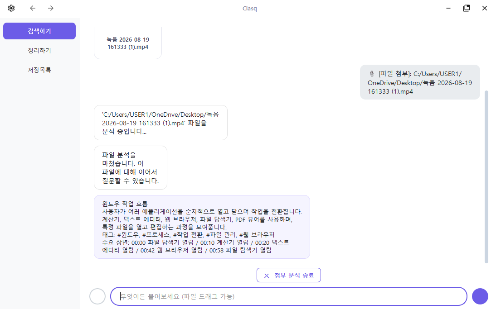
> Local AI Runtime / Server Log
• Qwen inference · HTTP 200 OK
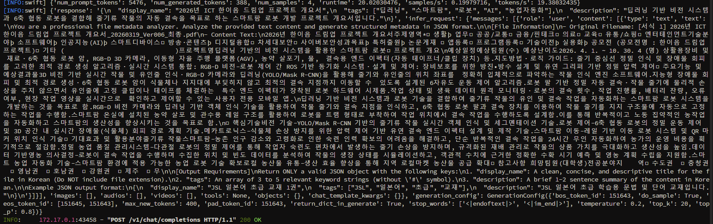
실제 구현에 참여한 영역
OCR / Data Engineering / Flask / Vue / GPU / Linux
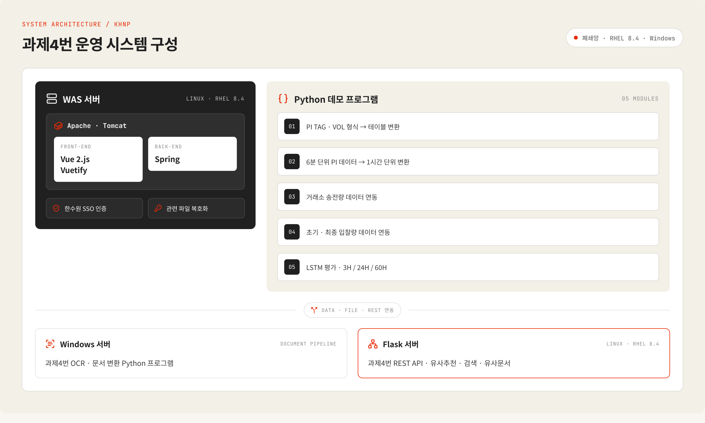
What I Did
Outcome
Raspberry Pi / MR60BHA2 / MLX90640 / React / FastAPI / SSE
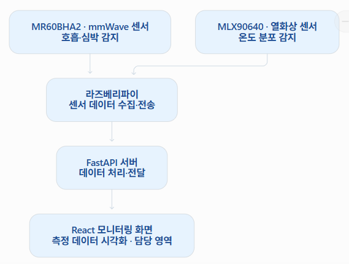
monitoring_state
개인 상태 기준과 알림 기준을 화면에 반영
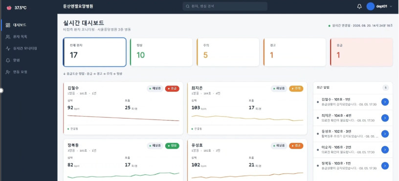
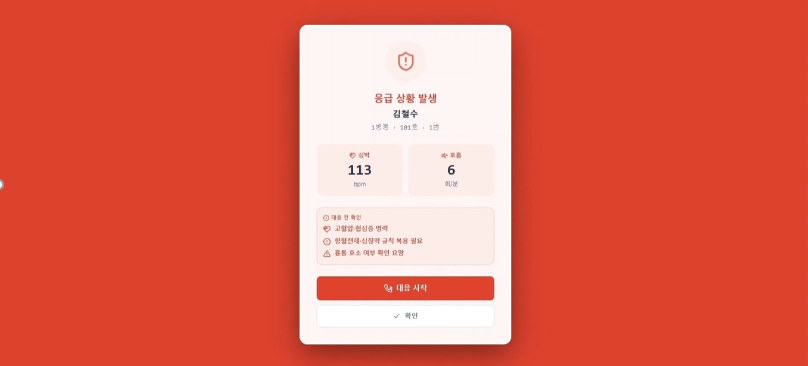
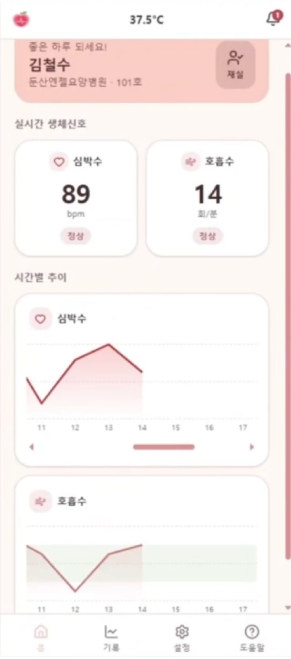
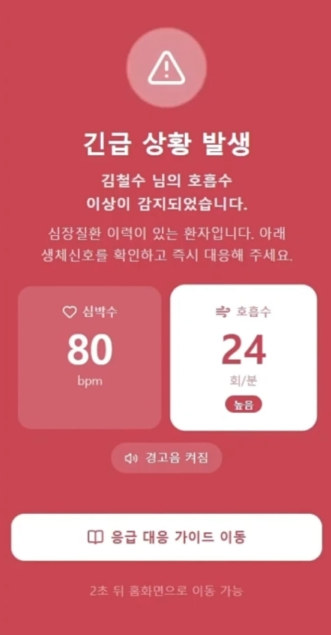
팀에서 구성한 센서 하드웨어와 데이터 흐름. 상태 기준은 제가 화면 로직에 반영했습니다.
반응형 모니터링 UI를 웹·모바일 대시보드와 응급 스크리닝 화면으로 나누어 구성했습니다. 센서 이상값은 긴급 화면과 경고음으로 연결됩니다.
What I Did
팀 프로젝트에서 제가 맡은 영역
YOLO · DeepSORT · Process Analysis · Vue
Result
실제 산업 현장에서 운영되는 시스템 개발 경험.
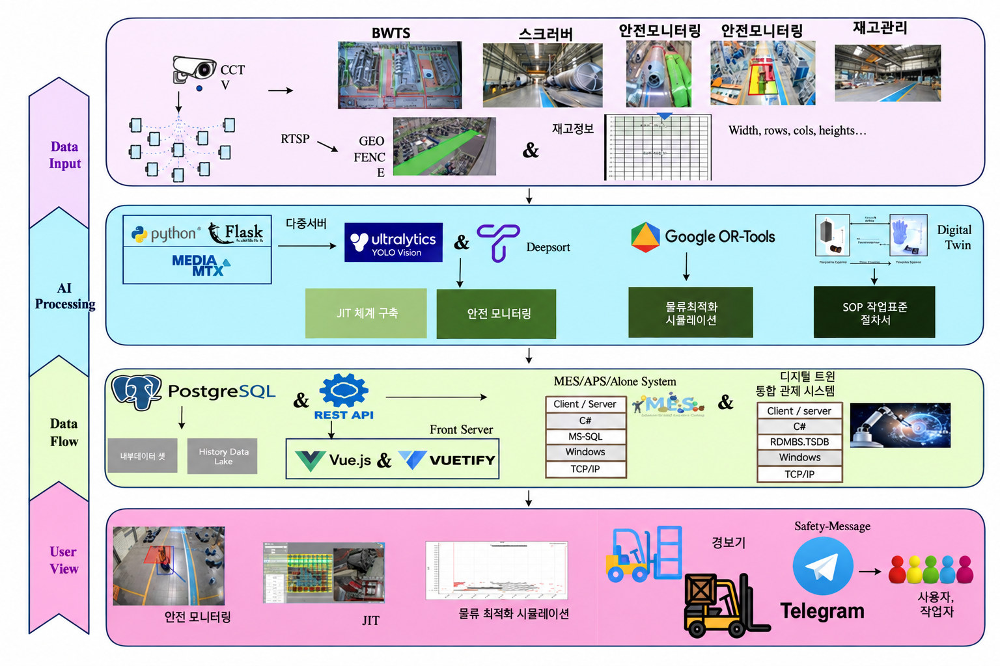
System Layers
CCTV · RTSP · GeoFence · 설비 · 재고데이터
YOLO · DeepSORT · OR-Tools · Digital Twin
PostgreSQL · REST API · Vue / Vuetify · MES / APS
안전모니터링 · JIT · 물류시뮬레이션 · Telegram 경보
전체 시스템 중 CCTV 기반 검출·추적과 공정 상태 판단, 위험 알림 구간을 담당했습니다.
실제 시스템 구성도. 현장 데이터 입력부터 AI 처리, 데이터 연동, 사용자 화면까지 4개 계층으로 이어지는 구조 안에서 작업했습니다.
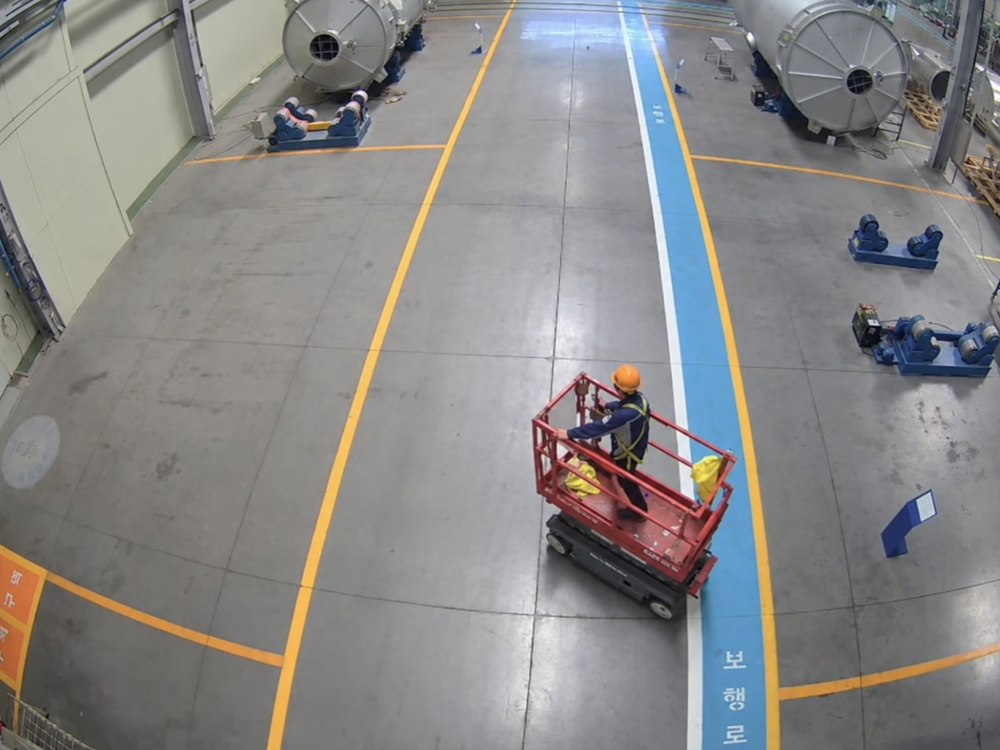
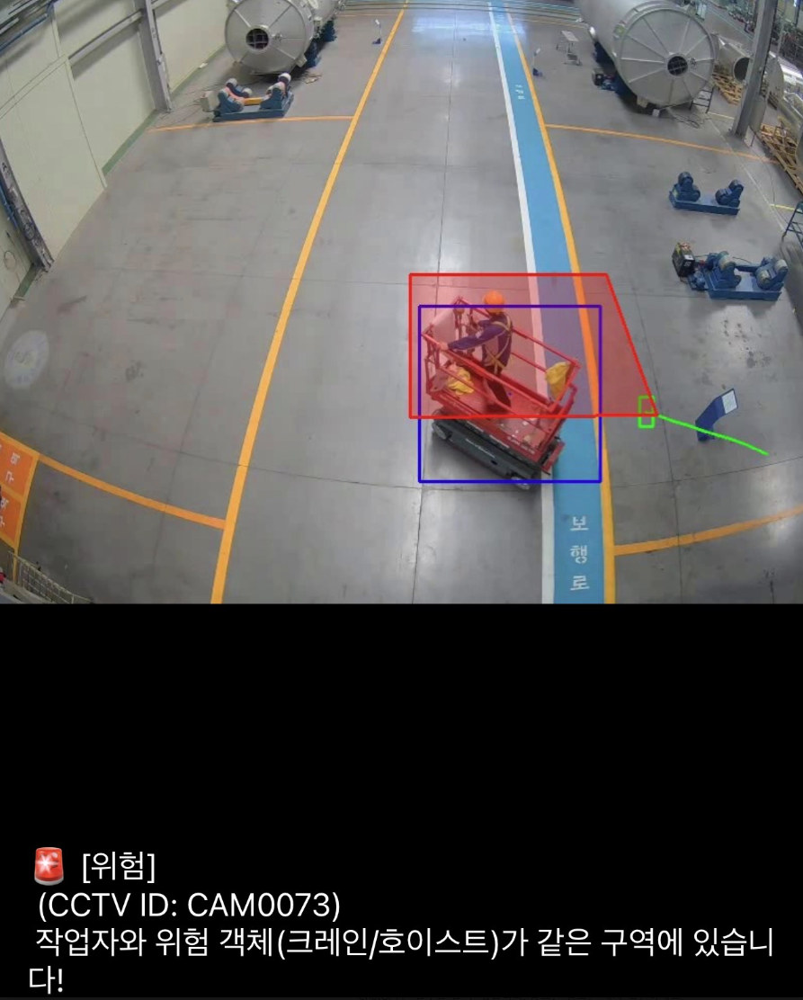
같은 프레임을 원본과 검출 결과로 비교합니다. 검출값을 그대로 쓰지 않고 공정률 보정과 영역별 상태 판단을 거쳐 업무 지표로 바꾸는 구간이 핵심입니다.
Conditions
반사광 곡률 압인 문자 저대비일반 OCR로는 인식이 어려운 조건 · 동일 원본 이미지 기준
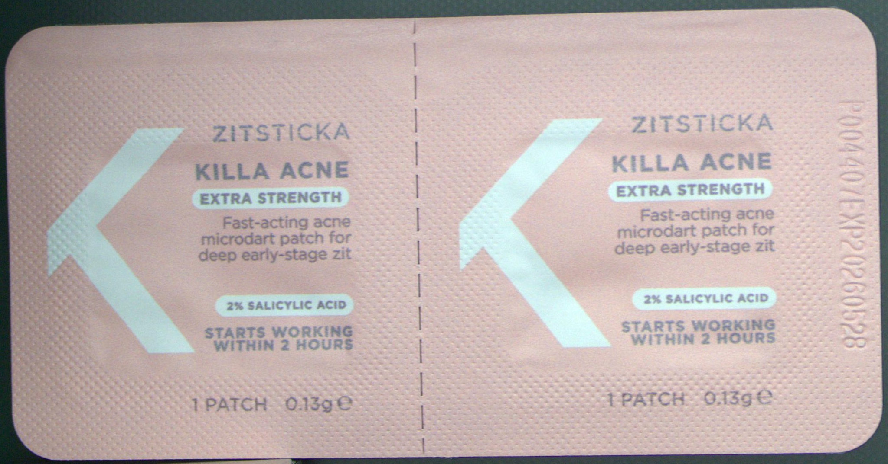
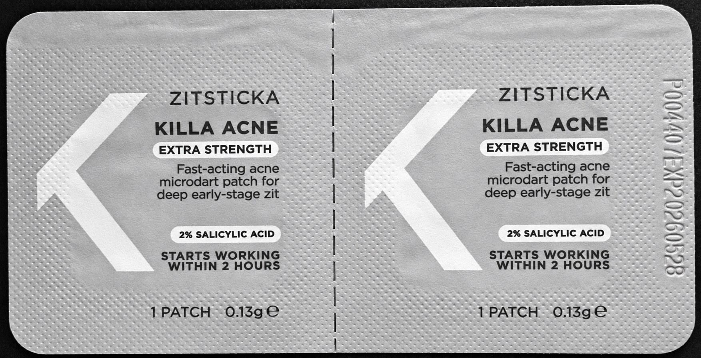
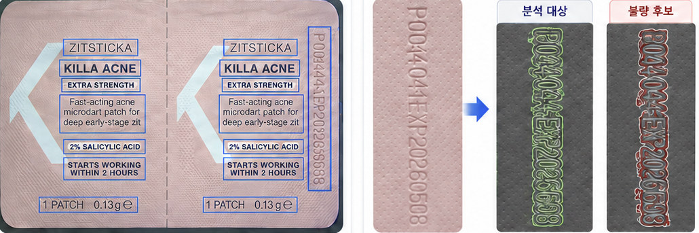
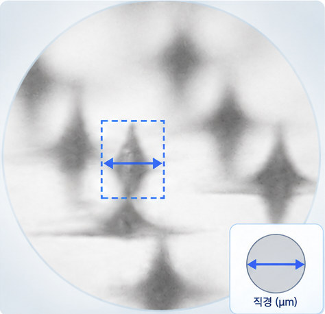
모델만으로 읽기 어려운 조건을 이미지 전처리와 규칙 기반 검증으로 보완해 검사 결과로 만들었습니다.
OpenCV · OCR · Image Processing · Regex
Result
모델만으로 다루기 어려운 조건을 규칙 기반 처리와 함께 해결.
03 / Other Projects
프로토타입 · 데이터 분석 작업
CCTV 영상에서 차량을 추적하고 이동 방향·속도·위반 상황을 판정한 프로토타입.
Prototype비정형 레시피 데이터를 정제하고 식재료 동의어와 맛 Feature를 설계했습니다.
Data Analysis지역 상권·인구 데이터 분석과 환경 성과 지표 설계를 다룬 데이터 분석 작업.
Data Analysis04 / Experience
AI High-tech Program
AI / Data Engineer
Developer Intern
05 / Tech Stack
AI / ML
Python · YOLO · OCR · RAG · LLM · Recommendation
Data
MySQL · PostgreSQL · Data Lake · Warehouse · Mart
Backend / Infra
Flask · FastAPI · Linux · Docker · AWS · llama.cpp
Frontend
Vue · Vuetify · React
데이터를 실제로 사용할 수 있는 시스템으로 만드는 일을 계속하고 싶습니다.